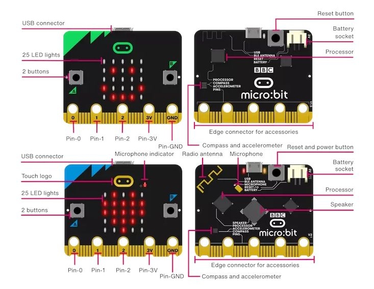
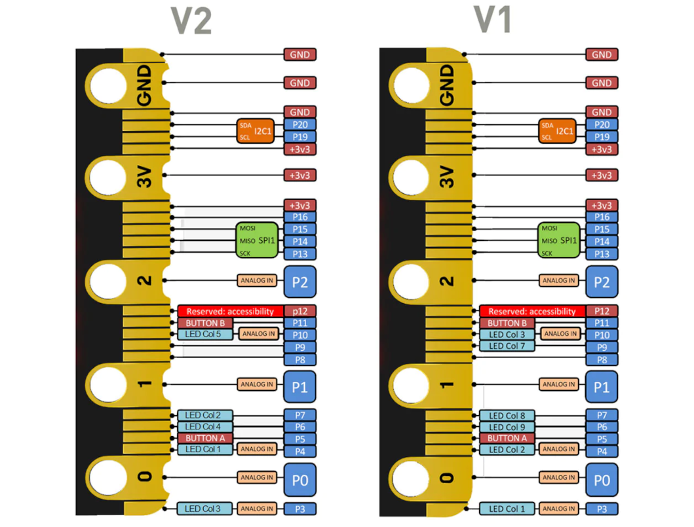

แนะนำบอร์ดไมโครคอนโทรลเลอร์ BBC Micro:bit#
Keywords: BBC Micro:bit, Microcontroller Programming, Physical Computing
▷ บอร์ดไมโครบิต#
ในเดือนมีนาคม ปีค.ศ. 2015 สถานีโทรทัศน์สื่อสาธารณะของสหราชอาณาจักร หรือ BBC (British Broadcasting Corp.) ได้เปิดตัวโครงการบอร์ดไมโครคอนโทรลเลอร์สำหรับเยาวชน ที่มีชื่อว่า BBC Micro:bit ("ไมโครบิต") ภายใต้ชื่อโครงการ "BBC’s Make It Digital Campaign"
โครงการดังกล่าวมีวัตถุประสงค์หลักคือ การส่งเสริมการเรียนรู้ด้านโค้ดดิ้งและวิทยาการคำนวณให้แก่เยาวชน และได้มีการแจกจ่ายบอร์ดไปยังโรงเรียนต่าง ๆ ในประเทศอังกฤษในปีค.ศ. 2016 เป็นต้นมา และจำหน่ายบอร์ดไมโครบิตให้ผู้ที่สนใจ บอร์ดไมโครบิตเวอร์ชันแรก (BBC Micro:bit v1) มีอยู่สองรุ่นที่มีการใช้งานแพร่หลายคือ v1.3B และปรับปรุงเป็น v1.5 ตามลำดับ
บอร์ดรุ่น v1.3B ใช้ชิป NXP/Freescale MMA8652 (3-axis accelerometer) และ NXP/Freescale MAG3110 (3-axis magnetometer) แต่รุ่น v1.5 ได้เปลี่ยนมาใช้ชิป ST LSM303GR (3-axis accelerometer + 3-axis magnetometer)
ต่อมาในเดือนตุลาคม ค.ศ. 2020 ทาง Microbit Educational Foundation ได้เปิดตัวบอร์ดไมโครบิตเวอร์ชันใหม่ที่แตกต่างหรืออัปเกรดจากเวอร์ชันแรก บอร์ดไมโครบิต BBC Micro:bit v2 ซึ่งมีความแตกต่างจากบอร์ดรุ่นแรก BBC Micro:bit v1 และมีการปรับปรุงแก้ไข ได้แก่เวอร์ชัน v2.00 และ v2.21 (เป็นเวอร์ชันล่าสุด ในขณะที่เขียนบทความนี้) ตามลำดับ
แม้ว่าจะมีขนาดของบอร์ด และขาต่าง ๆ ของส่วนที่เรียกว่า 25-pin Edge Connector จะเหมือนกัน ความแตกต่างที่สำคัญระหว่างบอร์ดไมโครบิต v1.5 และ v2.x ได้แก่ ตัวชิปไมโครคอนโทรลเลอร์ที่ใช้งาน ซึ่งได้มีการเปลี่ยนจาก nRF51822 (Arm Cortex M0) มาเป็น nRF52833 (Arm Cortex M4) ดังนั้นจึงมีความสามารถในการประมวลผลสูงกว่า และมีหน่วยความจำมากกว่า

รูป: บอร์ดไมโครบิต (Micro:bit v1 และ Micro:bit v2)
- Micro:bit v1 (v1.3 & v1.5):
- Application (Target) MCU: nRF51822, ARM Cortex-M0 processor, 16 MHz, 256kB Flash 16kB SRAM
- Radio: 2.4GHz BLE Bluetooth 4.0
- Nordic SoftDevice: S110
- Interface MCU: NXP KL26Z
- Micro:bit v2 (v2.0 / v2.2):
- Application (Target) MCU: nRF52833, ARM Cortex-M4 processor, 64 MHz, 512kB Flash, 128kB SRAM
- Radio: 2.4GHz BLE Bluetooth 5.1 (Bluetooth Mesh, Thread, Zigbee)
- Nordic SoftDevice: S113
- Interface MCU: NXP KL27Z หรือ nRF52820

รูป: แสดงขาเชื่อมต่อในส่วนที่เรียกว่า Edge Connector ของบอร์ดไมโครบิต v2 (ซ้าย) และ v1 (ขวา)
บอร์ด Micro:bit v2 ยังมีชิปไมโครโฟน (SPU0410LR5H-QB-7 MEMS Microphone) มีลำโพงเสียง (Speaker) และบริเวณที่เป็นโลโก้ (Logo) สามารถใช้งานเป็นอินพุตแบบ Capacitive Touch Sensor
บอร์ดไมโครบิต v1 มีความสามารถในการจ่ายไฟเลี้ยงกระแสตรงจากขา 3.3V ของ Edge Connector ได้ไม่เกิน 90mA (เนื่องจากใช้วงจรควบคุมแรงดัน แบบ On-chip regulator ของชิป KL26Z) แต่สำหรับบอร์ด v2 จะได้มากขึ้นกว่ารุ่นแรก แต่ไม่เกิน 190mA เนื่องจากได้มีการเปลี่ยนมาใช้ไอซีควบคุมแรงดัน แบบ On-board LDO Regulator (NCP114-3.3V)
วงจรหรือไอซีบนบอร์ดทั้งสองเวอร์ชันที่มีเหมือนกัน เช่น
- 5x5 Programmable LED matrix
- MicroUSB Connector
- Push Buttons A & B
- Reset Button
- Edge Connector
- JST Battery Connector
- ST LSM303AGR Accelerometer / Digital Compass (I2C)
▷ ตัวเลือกสำหรับการเขียนโค้ด#
เนื่องจากบอร์ดไมโครบิตได้ถูกออกแบบมาเพื่อนำไปใช้สำหรับการเรียนรู้การเขียนโปรแกรมหรือโค้ดดิ้งสำหรับเยาวชน ดังนั้นภาษาคอมพิวเตอร์หรือรูปแบบที่ใช้ในการเขียนโค้ด จึงอาจไม่ใช่ภาษา C/C++ หรือ Arduino และตัวเลือกแรกจะเป็น Microsoft MakeCode Editor for Micro:bit ซึ่งใช้วิธีการเขียนโค้ดด้วยการต่อบล็อก (Block-based Coding) และสามารถแปลงให้เป็นโค้ดในภาษา Static TypeScript (STS) ได้โดยอัตโนมัติ
ในช่วงเวลาต่อมาก็สามารถใช้ภาษา Python และมี Online Python Editor for Micro:bit หรืออาจจะใช้ร่วมกับโปรแกรม Scratch ก็ได้เช่นกัน แต่ตัวเลือกสำหรับการเขียนโค้ดด้วยภาษาไพธอนสำหรับบอร์ดไมโครบิตรุ่นแรกได้เริ่มต้นในเดือนตุลาคม ปีค.ศ. 2015 เมื่อ Damien George ได้เผยแพร่เวอร์ชันของ MicroPython ("ไมโครไพธอน") สำหรับบอร์ดไมโครบิต ชุดคำสั่งหรือฟังก์ชันของ MicroPython for Micro:bit มีความแตกต่างจากคำสั่งของ MakeCode - Python for Micro:bit
ในปัจจุบันก็มีหลายตัวเลือกในกลุ่มซอฟต์แวร์ประเภท Editors / IDEs ที่ใช้งานได้ จำแนกออกเป็นประเภท Offline (ต้องติดตั้งโปรแกรมในเครื่องคอมพิวเตอร์ของผู้ใช้) และ Online (ใช้งานผ่านเว็บเบราว์เซอร์) และในบางกรณี ผู้ใช้สามารถจำลองการทำงานของโค้ดได้ โดยยังไม่จำเป็นต้องใช้ฮาร์ดแวร์จริง
- MicroPython Editor for Micro:bit (v1.0 | v2.x | v3.0):
- Version 1.0: https://python.microbit.org/v/1.0
- Version 2.0: https://python.microbit.org/v/2.0
- Version 2.2: https://python.microbit.org/v/2.2
- Version 3.x: https://python.microbit.org/v/3
- with a built-in simulator (launched: Oct 6, 2022)
- Version Beta: https://python.microbit.org/v/beta
- Github Repo:
- Version 2: /bbcmicrobit/PythonEditor
- Version 3: /microbit-foundation/python-editor-v3
- Microsoft MakeCode Editor (Block-based Coding, Static TypeScript, Python)
- Stable Version: https://makecode.microbit.org/stable
- Beta Version: https://makecode.microbit.org/stable
- Mu Editor for Python: https://codewith.mu/en/download
- Thonny IDE for Python: https://thonny.org/
การเขียนโปรแกรมด้วยไมโครไพธอน (MicroPython Editor) จะต้องมีการติดตั้งไฟล์เฟิร์มแวร์ด้วย
MicroPython Firmware for Micro:bit v2
- ใช้โค้ดของ MicroPython (v1.18) เป็นพื้นฐานในการพัฒนา และใช้ร่วมกับ CODAL v2 API
- Initial version: v2.0.0-beta (released Nov 24, 2020 )
- Latest version: v2.1.1 (released Nov 10, 2022 ขณะที่เขียนบทความนี้)
- Github Repo: /microbit-foundation/micropython-microbit-v2
- Firmware files: /microbit-foundation/micropython-microbit-v2/releases/
ในกรณีที่ต้องการเขียนโค้ดด้วยภาษา C/C++ สำหรับบอร์ดไมโครบิต ก็มีมากกว่าหนึ่งตัวเลือก เช่น
- ใช้ซอฟต์แวร์ VS Code IDE + nRF Connect SDK for VS Code ของบริษัท Nordic ผู้ผลิตชิป nRF52833 หรือใช้ nRF MDK (Microcontroller development kit) ร่วมกับ IDE อย่างเช่น SEGGER Embedded Studio (SES)
- ใช้ซอฟต์แวร์ CODAL v2 ที่ได้มีการพัฒนาโดยนักวิจัยของมหาวิทยาลัย Lancaster University ในประเทศอังกฤษ ช่วยให้การเขียนโปรแกรมด้วยภาษา C/C++ โดยใช้ API ทำได้ง่ายขึ้น แต่ CODAL v2 จะใช้ได้กับเฉพาะกับบอร์ดไมโครบิต v2 (เวอร์ชันสอง) เท่านั้น
- ใช้ซอฟต์แวร์ Arduino IDE และติดตั้ง Arduino Core for nRF52 และเขียนโปรแกรมด้วย Arduino Sketch ซึ่งรองรับบอร์ดไมโครบิต v1 และ v2
▷ แหล่งข้อมูลเกี่ยวกับไมโครบิต#
Micro:bit Technical References:
- https://tech.microbit.org/hardware/
- https://tech.microbit.org/hardware/schematic/
- https://github.com/bbcmicrobit/hardware
- https://github.com/carlosperate/awesome-microbit
- The BBC micro:bit MicroPython API Documentation
ตัวอย่างสินค้าที่ใช้บอร์ดไมโครบิต
- หุ่นยนต์มีล้อเคลื่อนที่ได้โดยใช้บอร์ดไมโครบิตเป็นอุปกรณ์ควบคุม
▷ กล่าวสรุป#
บทความนี้นำเสนอข้อมูลเกี่ยวกับบอร์ดไมโครบิตในเบื้องต้น ซึ่งเป็นบอร์ดไมโครคอนโทรลเลอร์ที่สามารถนำมาใช้ในการเรียนด้านระบบสมองกลฝังตัว และการฝึกเขียนโปรแกรมไมโครคอนโทรลเลอร์ด้วยภาษาคอมพิวเตอร์ ซึ่งมีอยู่มากกว่าหนึ่งตัวเลือก
This work is licensed under a Creative Commons Attribution-ShareAlike 4.0 International License.
Created: 2023-03-05 | Last Updated: 2023-03-08